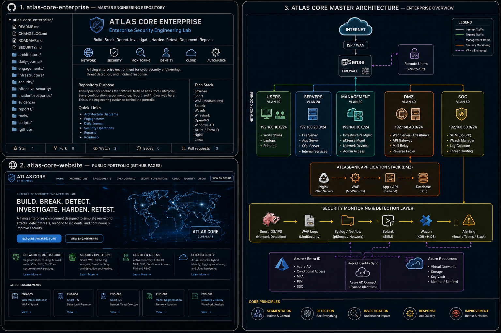

Network Visibility
Wireshark traffic analysis and protocol baselining.
COMPLETEDAtlas Core is a living enterprise environment for network security, application security, identity, SOC operations, vulnerability management, cloud and DevSecOps.
One evolving enterprise environment. Independent engagements are executed against the same architecture.

Wireshark traffic analysis and protocol baselining.
COMPLETEDValidate isolation and controlled inter-zone traffic.
PLANNEDDetect authorized reconnaissance and suspicious traffic.
PLANNEDValidate prevention controls and safe blocking.
PLANNEDCorrelate WAF, network, application and SIEM telemetry.
PLANNED